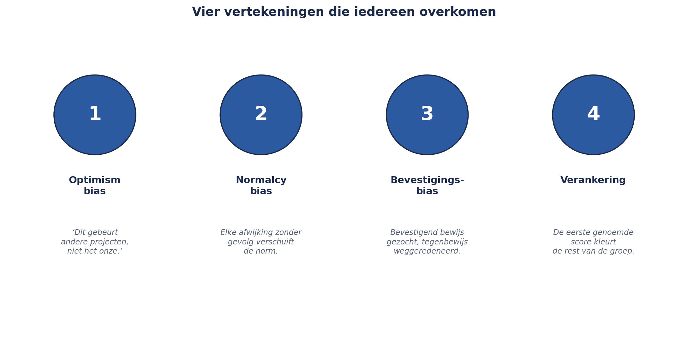
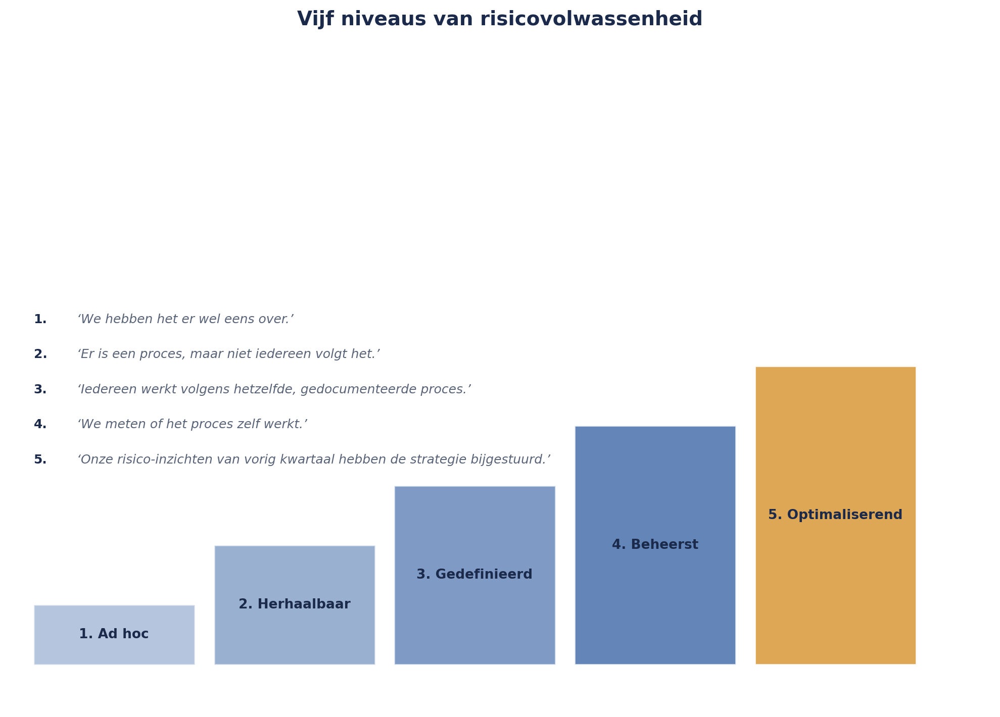

Cursus Risicomanagement · Niveau 2 (M_o_R 4/IRM) · Deel 20 van 30
Goed nieuws georganiseerd is geen risicomanagement.
Bij de nabespreking van de rapportagesimulatie uit deel 19 ontdekken enkele groepjes iets ongemakkelijks: zonder dat iemand het opzettelijk deed, klonk hun rapportage aan de Raad van Bestuur geruststellender dan die aan het projectteam — dezelfde score, net iets zachter geformuleerd. Het register was correct, de risicozin was correct, de schaal was correct. Het probleem zat niet in het instrumentarium, maar in de onbewuste neiging van de mensen die het gebruikten. Dit deel — los aanbiedbaar, zonder voorkennis van de rest van de cursus — behandelt vier vertekeningen die vrijwel iedereen overkomen, psychologische veiligheid als voorwaarde voor eerlijk melden, en vijf niveaus van risicovolwassenheid.
6secties
±1uleestijd + werkboek
4controlevragen
5volwassenheidsniveaus §20.4
Positionering. Deze cursus is een voorbereiding op M_o_R 4 Practitioner (PeopleCert) en het IRM International Certificate in ERM (Institute of Risk Management), en uitdrukkelijk geen vervanging van het officiële examenmateriaal van die instanties. Controleer bij inschrijving altijd het actuele aanbod, de kosten en de examenvorm bij PeopleCert, het IRM of uw opleider zelf; informatie in dit materiaal is geverifieerd in augustus 2026 en kan wijzigen.
Niveau 2: 11 M_o_R 4: van project naar de hele onderneming → 12 Risicobereidheid, -capaciteit en toleranties → 13 Identificatie op programmaschaal → 14 Kwantitatief I: verwachtingswaarde, beslisbomen, drie-puntsschattingen → 15 Kwantitatief II: Monte Carlo-simulatie → 16 Bow-tie-analyse: oorzaken, gevolgen en barrières die je test → 17 Geaggregeerd risico en risico in verschillende leveringsmodellen → 18 IT- en cyberrisico → 19 Rapportage en besluitvorming → 20 Risicocultuur en gedrag (hier) → 21 De risicofunctie inrichten → 22 Examentraining en capstone: de geaggregeerde verdediging
01
De ontdekking die techniek niet kan oplossen
⏱ 8 min
Voor wie dit deel los volgt
Dit deel vereist geen voorkennis van de rest van de cursus. Waar wordt verwezen naar eerdere delen (bijvoorbeeld de risicomatrix of een risicoregister), is dat bedoeld ter illustratie, niet als vereiste voorkennis. Voor deelnemers die de volledige cursus volgen, sluit dit deel aan op de ontdekking aan het eind van deel 19: een onbewuste neiging om risico's naar boven toe geruststellender te rapporteren dan de feiten rechtvaardigen.
Bij de nabespreking van de rapportagesimulatie (deel 19) ontdekten enkele groepjes iets ongemakkelijks: zonder dat iemand het opzettelijk deed, klonk hun rapportage aan de Raad van Bestuur geruststellender dan die aan het projectteam — dezelfde score, maar net iets zachter geformuleerd, net iets minder expliciet over de onzekerheid.
Dit is geen fout in een instrument. Het register was correct, de risicozin was correct, de schaal was correct. Het probleem zat niet in het instrumentarium — het zat in de onbewuste neiging van de mensen die het instrumentarium gebruikten. Dat is precies waar dit deel over gaat: risicomanagement kan het beste instrumentarium ter wereld hebben, en toch mislukken, als de cultuur eromheen dat instrumentarium ondermijnt.
Kernzin 14 van de cursus
Een organisatie die nooit slecht nieuws hoort, heeft geen goed risicomanagement — ze heeft alleen goed nieuws georganiseerd.
02
Waarom techniek alleen niet volstaat
⏱ 8 min
Elk instrument dat in deze cursus tot nu toe is behandeld — de risicozin, de matrix, het register, Monte Carlo-simulatie — veronderstelt één ding dat zelden expliciet wordt gemaakt: dat de mensen die het instrument gebruiken, bereid en in staat zijn om onwelkome informatie eerlijk te benoemen. Zonder die bereidheid levert het beste instrument nog steeds een vertekend beeld op — niet omdat het instrument faalt, maar omdat de invoer al gekleurd was voordat hij het instrument bereikte.
ISO 31000's achtste principe (deel 2, niveau 1) noemde dit al: risicomanagement moet rekening houden met menselijke en culturele factoren. Dit deel is de volledige uitwerking van dat principe, dat in niveau 1 bewust kort werd gehouden.
03
Vier vertekeningen die iedereen overkomen
⏱ 16 min
Dit zijn geen karakterzwaktes van bepaalde mensen — het zijn structurele denkpatronen die bij vrijwel alle mensen optreden, ongeacht opleiding of ervaring.
Optimism bias. De neiging om de kans op een positieve uitkomst voor onszelf te overschatten en die op een negatieve uitkomst te onderschatten — "dit gebeurt andere projecten, niet het onze." Dit is een directe verklaring voor waarom drie-puntsschattingen (deel 14) zonder discipline vaak te optimistisch uitvallen: de "meest waarschijnlijke" schatting ligt in de praktijk vaak dichter bij het optimistische scenario dan bij het werkelijk gemiddelde.
Normalcy bias. De neiging om aanhoudende, geleidelijke afwijkingen als "normaal" te gaan beschouwen, simpelweg omdat ze steeds zijn voorgekomen zonder rampzalig gevolg. Dit is nauw verwant aan wat in de veiligheidswetenschap normalisering van afwijking heet: elke keer dat een afwijking van de norm zonder gevolgen blijft, verschuift de norm zelf een klein stukje, tot niemand meer beseft hoe ver de praktijk inmiddels van het oorspronkelijke, veilige uitgangspunt afstaat. Regel 11 van het oude WGP 2.0-register (deel 1, niveau 1) is hiervan een voorbeeld: veertien maanden op score 25, zonder gevolgen, tot het bijna onzichtbaar werd — niet omdat niemand het zag, maar omdat het "altijd al zo was."
Bevestigingsbias (confirmation bias). De neiging om informatie te zoeken en te onthouden die een bestaande overtuiging bevestigt, en tegenstrijdige informatie te negeren of weg te verklaren. Bij risicoanalyse betekent dit: als een team ervan overtuigd is dat een leverancier betrouwbaar is, wordt een enkel incident als "uitzondering" weggezet in plaats van als signaal.
Verankering (herhaald uit deel 5). De eerste hardop genoemde score kleurt de rest van de groep. In deel 5 werd dit als een technisch scoringsprobleem behandeld, met een technische oplossing (individueel-schriftelijk-vóór-bespreken). Hier wordt duidelijk dat het net zo goed een cultuurvraagstuk is: verankering is sterker in een cultuur waarin tegenspreken van een senior collega ongemakkelijk voelt.

Figuur 20-1 — vier vertekeningen als iconen naast elkaar, elk met een korte omschrijving en een verwijzing naar waar ze in de cursus al zijn tegengekomen zonder als gedragspatroon te zijn benoemd.
Controlevraag
Uit Werkboek deel 20, Opdracht 20.1 — Herken de vertekening
1Vier situaties: (a) "We hebben deze leverancier al drie jaar, ze zijn prima" — gezegd nadat er twee keer een klein incident is geweest dat telkens als toeval werd afgedaan. (b) "Bij ons project gaat dat niet gebeuren, wij hebben een goed team." (c) Een teamlid stelt een lagere schatting voor dan aanvankelijk gepland, meteen na het horen van de eerste, optimistische schatting van de projectleider. (d) Een risico dat twee jaar geleden als "tijdelijk acceptabel" werd bestempeld, staat nog steeds zo geregistreerd, zonder dat iemand zich afvraagt of dat nog klopt. Welke vertekening speelt hier telkens het meest waarschijnlijk?Toon antwoord
a. Bevestigingsbias, mogelijk gecombineerd met normalcy bias — incidenten worden weggezet als uitzondering in plaats van als signaal dat de overtuiging ("ze zijn prima") zou moeten bijstellen. b. Optimism bias — de klassieke, bijna letterlijke formulering van deze vertekening. c. Verankering — de eerste genoemde schatting kleurt onmiddellijk de volgende, ook al is de richting hier "lager" in plaats van "hoger". d. Normalcy bias / normalisering van afwijking — een afwijking die zo lang ongewijzigd blijft dat niemand meer de vraag stelt of het label nog klopt. In de praktijk werken deze vertekeningen vaak samen, zoals bij a — het is niet nodig om altijd precies één label te kiezen, het gaat om het herkennen van het patroon.
04
Psychologische veiligheid
⏱ 12 min
Psychologische veiligheid is de gedeelde overtuiging binnen een team dat het veilig is om een risico, een fout, of een onzekerheid hardop te benoemen, zonder daarvoor te worden afgestraft, belachelijk gemaakt, of buitengesloten. Dit begrip, ontwikkeld binnen de organisatiewetenschap, is direct van toepassing op risicomanagement: een team zonder psychologische veiligheid identificeert structureel minder risico's, niet omdat er minder risico's zijn, maar omdat mensen ze niet hardop benoemen.
Drie herkenbare signalen van een gebrek aan psychologische veiligheid, specifiek in een risicomanagementcontext:
Risico's worden alleen gemeld als ze al issues zijn geworden (zie het onderscheid risico/issue uit deel 1, niveau 1) — mensen wachten tot een risico onmiskenbaar is, omdat vroeg melden als overdreven alarmerend kan worden gezien.
De persoon die een risico identificeert, wordt gezien als eigenaar van het probleem, in plaats van als iemand die waardevolle informatie heeft gedeeld — met als gevolg dat mensen leren om te zwijgen, niet om te melden.
Pre-mortem-sessies (deel 4, niveau 1) leveren opvallend weinig op — een indirecte, maar betrouwbare graadmeter, omdat deze techniek juist is ontworpen om het ongemak van direct melden te omzeilen; als zelfs die weinig oplevert, wijst dat op een dieper cultureel probleem.
Controlevraag
Uit Werkboek deel 20, Opdracht 20.2 — Signalen van psychologische veiligheid
1Beoordeel voor je eigen team of organisatie (of een team dat je goed kent) de drie signalen uit deze sectie: is elk signaal aanwezig, afwezig, of ergens tussenin?Toon antwoord
Geen vast antwoord — zelfreflectie-opdracht. Ter kalibratie, een voorbeeld van hoe een uitwerking eruit kan zien: signaal 1 (risico's pas gemeld als issue) gedeeltelijk aanwezig — bij technische risico's wordt vroeg gemeld, bij planningsrisico's wachten mensen vaak tot het al een probleem is. Signaal 2 (melder wordt eigenaar) sterk aanwezig en een herkend probleem — wie een risico meldt, krijgt het er vaak "gewoon bij" als taak. Signaal 3 (weinig opbrengst uit pre-mortems) soms niet te beoordelen, omdat de techniek zelf nog niet wordt gebruikt — dat is zelf ook een relevante constatering, die wijst op niveau 1 of 2 op de volwassenheidsschaal uit §20.4.
05
Risicovolwassenheid: vijf niveaus
⏱ 14 min
Voortbouwend op het idee uit het Orange Book (deel 2, niveau 1), hanteert deze cursus een vijfniveau-volwassenheidsmodel om te beoordelen hoe diep risicomanagement in een organisatie of team is verankerd:
Niveau
Kenmerk
1. Ad hoc
Risicomanagement gebeurt incidenteel, afhankelijk van individuele inzet; geen vast proces
2. Herhaalbaar
Er is een vast proces, maar het wordt inconsistent toegepast, sterk afhankelijk van wie erbij betrokken is
3. Gedefinieerd
Het proces is gedocumenteerd en wordt organisatiebreed op dezelfde manier toegepast
4. Beheerst
De effectiviteit van het proces wordt zelf gemeten (vergelijk werkingseffectiviteit, deel 16) en bijgestuurd
5. Optimaliserend
Risicomanagement is zo verankerd dat het proces zichzelf continu verbetert, en risico-inzichten actief bijdragen aan strategische besluitvorming
Het WGP 2.0-register van vóór de herstart (deel 1, niveau 1) bevond zich op niveau 1, mogelijk 2 — er was een sjabloon, maar geen consistente toepassing. Na de herstart, met het complete instrumentarium van niveau 1, bereikte het project niveau 3. Het Mutatieplatform-programma, met de aggregatietechnieken van dit niveau, beweegt richting niveau 4.
Belangrijk: een hoger niveau is niet automatisch beter voor elke situatie — een klein, kortlopend project heeft wellicht niet de investering nodig die niveau 4 of 5 vereist. Het model is een diagnose-instrument, geen doel op zich.

Figuur 20-2 — de vijf niveaus als oplopende trap, met bij elk niveau een korte typerende zin die een team op dat niveau zou kunnen uitspreken — bijvoorbeeld niveau 1: "we hebben het er wel eens over"; niveau 5: "onze risico-inzichten van vorig kwartaal hebben de strategie bijgestuurd."
Controlevraag
Uit Werkboek deel 20, Opdracht 20.3 — Plaats jouw team op de volwassenheidsschaal
1Op welk van de vijf niveaus bevindt jouw team of organisatie zich, naar jouw inschatting? Onderbouw met minstens twee concrete waarnemingen (geen aannames).Toon antwoord
Geen vast antwoord — toepassingsopdracht zonder vooraf bepaalde uitkomst. Let bij de bespreking op twee kwaliteitscriteria: is de inschatting onderbouwd met waarneembare feiten (bijvoorbeeld: "we hebben een vast registersjabloon, maar drie van de vijf teams gebruiken het niet consequent" wijst op niveau 2) in plaats van een vage indruk ("ik denk dat we het best goed doen")? En wordt het model gebruikt als diagnose, niet als beschuldiging? Een team op niveau 2 is niet "slecht bezig" — het is een startpunt voor een gesprek over wat de eerstvolgende, haalbare stap zou zijn.
06
Wat een organisatie concreet kan doen
⏱ 14 min
Vier praktische interventies, elk gericht op een van de bovenstaande mechanismen:
Scheid de boodschapper van de boodschap, expliciet en zichtbaar. Bedank iemand die een risico meldt, ook als het risico zich nooit voordoet — de handeling van melden verdient waardering, los van de uitkomst. Dit is de directe tegenmaatregel tegen het tweede signaal uit §20.3.
Maak pre-mortems een vast, terugkerend instrument, niet een eenmalige oefening bij projectstart (zie ook deel 4, niveau 1) — herhaling normaliseert het bespreken van mogelijke mislukking, wat de drempel voor individuele meldingen verlaagt.
Meet en bespreek de eigen risicovolwassenheid periodiek, met het model uit §20.4 als gespreksinstrument, niet als beoordelingsinstrument — het doel is een eerlijk gesprek over waar het team staat, niet een score om naar te streven voor de score zelf.
Vier het sluiten van een risico net zo zichtbaar als het identificeren ervan. Een cultuur die alleen aandacht geeft aan nieuwe, dramatische risico's, en nooit aan de rustige, competente afhandeling van bestaande risico's, beloont onbedoeld drama boven degelijkheid.
Controlevraag
Uit Werkboek deel 20, Opdracht 20.4 — Ontwerp een interventie
1Kies één van de vier praktische interventies hierboven. Beschrijf hoe je die, concreet en op korte termijn (binnen een maand), zou kunnen invoeren in een team naar keuze.Toon antwoord
Geen vast antwoord — toepassingsopdracht. Voorbeeld ter kalibratie, voor de interventie "scheid de boodschapper van de boodschap": in het eerstvolgende teamoverleg aankondigen dat voortaan, wanneer iemand een risico meldt, dat expliciet wordt benoemd als een bijdrage — bijvoorbeeld door in de notulen apart te vermelden wie een risico heeft geïdentificeerd, los van wie het uiteindelijk oplost. Na een maand bespreken of dit voelbaar iets heeft veranderd aan de bereidheid om vroeg te melden. Beoordelingscriteria: is de interventie concreet genoeg om daadwerkelijk uit te voeren (niet "we gaan een cultuur van openheid creëren" in algemene termen)? Is er een manier voorzien om te toetsen of het iets heeft opgeleverd?
Samenvattend: Kernzin 14 — een organisatie die nooit slecht nieuws hoort, heeft geen goed risicomanagement, ze heeft alleen goed nieuws georganiseerd. Vier vertekeningen treffen vrijwel iedereen: optimism bias, normalcy bias, bevestigingsbias en verankering. Psychologische veiligheid is de voorwaarde voor eerlijk melden, met drie herkenbare signalen van een gebrek eraan. Vijf niveaus van risicovolwassenheid, van ad hoc tot optimaliserend, dienen als diagnose-instrument, niet als doel op zich. En vier praktische interventies — de boodschapper waarderen, pre-mortems herhalen, volwassenheid periodiek bespreken, en het sluiten van risico's net zo vieren als het identificeren ervan — geven een organisatie concrete aangrijpingspunten.
Verder naar deel 21
Deel 21 keert terug naar de organisatiestructuur: hoe je de risicofunctie zelf inricht, met een verdiepte blik op three lines of defence — inclusief de kritiek op dat model die in niveau 1 nog buiten beschouwing bleef.